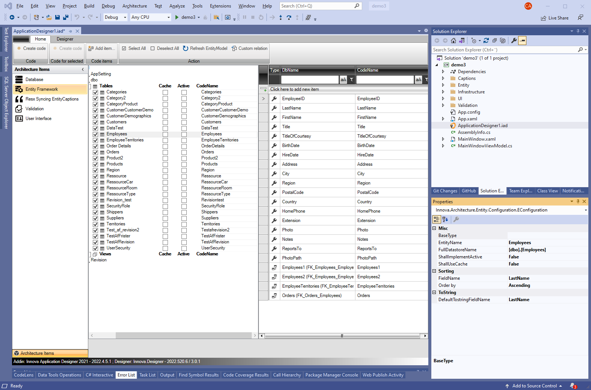

Introduction to Designer
The "Innova Developer Platform" is an advanced platform, created to optimize the development processes for software developers, by offering tools and methods that simplify the development work. It consists of two primary components:
- Innova Application Designer
- Innova Frameworks
Innova Application Designer
Innova Application Designer (IAD) is a development tool that integrates with Microsoft Visual Studio. With IAD, developers can easily configure the different layers in the application architecture. After the necessary configuration, code can be generated directly in Visual Studio, contributing to a more streamlined and efficient development process.
With IAD, developers get the opportunity to visually explore and define which architectural elements they want to include in their application, and adjust them as needed. When an architectural element is chosen, such as "Entity Framework", developers can specify which database tables should be included in the application's entity layer.

Note that the "Solution Explorer" is located to the right, while IAD is on the left side. A single double-click on the file "ApplicationDesigner.iad" from the "Solution Explorer" opens the IAD interface.
The far left column of IAD displays the chosen architectural elements. After choosing a specific architectural element, you can configure and customize the architectural element.
As exemplified, by choosing "Entity Framework", it becomes possible to specify which database tables should be integrated into the application's entity layer. After completing the configuration, click on the "Create code" button, which generates C# code for the entire entity layer. This code can then be viewed, and if necessary adjusted, via the solution explorer.
Each architectural element uses metadata from underlying elements and automates the configuration, which simplifies the configuration process.
Customization of the generated code
The generated code is designed to be as flexible as possible. Since the code is generated as a "partial class", developers can easily tailor the code to a specific application's needs. Further guidance can be found in our How-To Guides.
Innova Framework
Innova Framework offers a comprehensive collection of development tools and frameworks designed to extend and complement popular .NET frameworks: